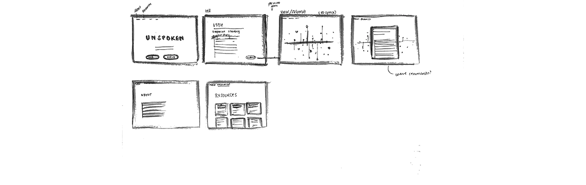
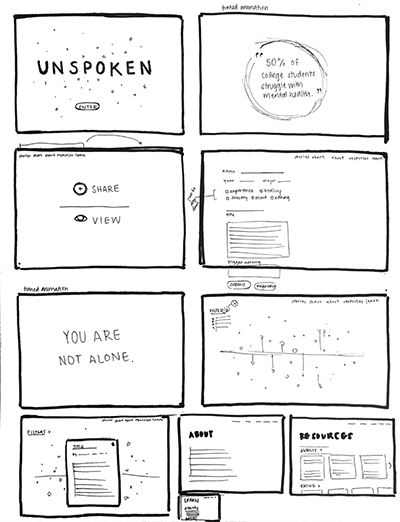
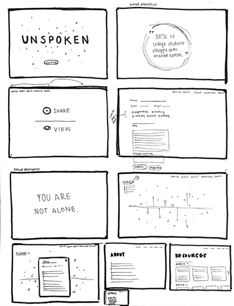

Cherilyn and I did three paper prototypes in total, two in class and one outside of class with Glenda's new feedback on our project. The feedback we got helped us understand the options users should have at all times, such as the navigation bar, options to opt out of actions, etc. We were also given feedback on adding filters to the project so that users can find certain kinds of stories more easily. Overall, the paper prototypes helped us see the big picture of our project's structure and how people would interact with it.
 
